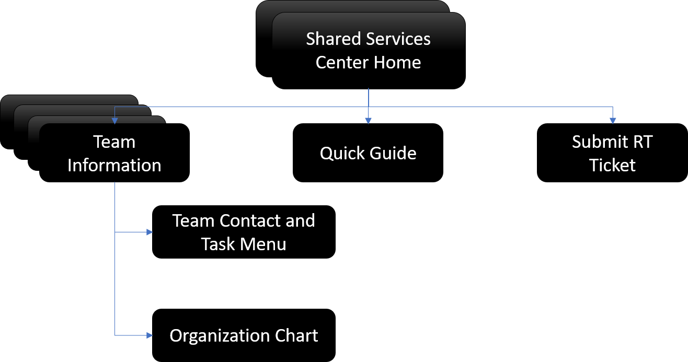
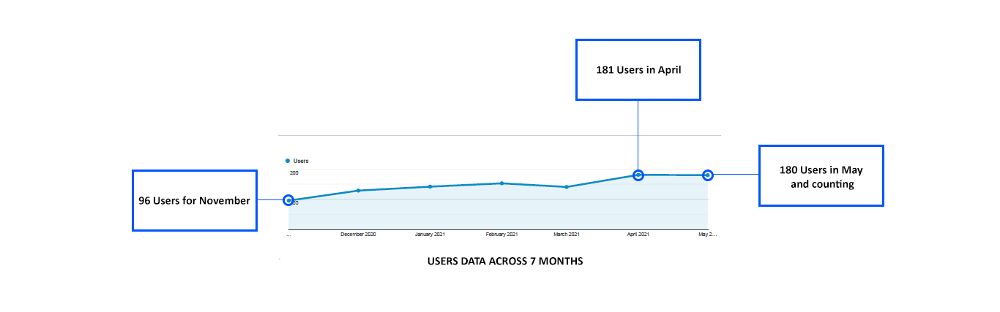

United States Postal Service (USPS.com) Website
What's this about?
Our team at UserWorks did a study to generate recommendations for the United States Postal Service website. The personnel at USPS wanted to check the interaction of users in new pages that included international shipping. They also wanted us to analyze features that could be added in the future but in accordance with what the users mention.
My Role
As a User Experience Specialist, my task included conducting interviews, note-taking and data analysis for key pointers. My team and I then provided recommendations based on the analyzed data.
Outcome
UserWorks provided recommendations based on scenario-based testing/interviews for updated pages of USPS.com®
Goals
Scenario-based testing/interview to obtain feedback on 3 updated pages on USPS.com® (International Mail & Shipping Services, How to Send a Letter or Postcard: International, and How to Send a Package: International).
Participant review of different proposed homepage Step Treatment designs.

Challenges
- Difficult to settle on a single design for the rework.
- Condensing an already small architecture to accomodate the users needs.
- Improving content discovery on technical information was time consuming because of the learning associated with it.
- It was the first time I was handling quantitative data, so it took a while for me to learn and apply the concepts.
- Using Wordpress for content management was extremely challenging because it removes any flexibility required by the developer for content that would make the website aesthetically pleasing, or improve the functioning dramatically.
I like the images. They are very easy on the eye and convey a lot of information.
Study Structure
24 usability test sessions conducted remotely in November 2021.
Each session was approximately 80 minutes.
USER INTERVIEWS
I conducted interviews of people who worked at the university and atleast heard of the Shared Services Center. Experience of people with the website ranged from first time users to people who have seen the website since its inception.
Participants Interviewed
Demographic: Faculty, Students, Researchers and Admin Staff. Age: 18+
Gender: Any
Ethnicity: Any
Experience with the website: No Experience to Expert User.
#1. Context Issues
#2. Repetitive Information
#3. Search Relevancy
#4. Images tagged as "outdated" and "useless"
HEURISTIC EVALUATION
I took the role of the evaluator and performed Heuristic evaluations on the Shared Services Center Website. To achieve this, I worked to identify issues with the website, per Nielsen’s Ten Heuristics. I found issues pertinent mainly to search, navigation, and content discovery.

#1: VISIBILITY OF SYSTEM STATUS
Outdated Images may throw the user off guard and may be one of the main issues that increases the bounce rates.
#2: MATCH BETWEEN SYSTEM AND THE REAL WORLD
The content within the website may be known to the people working in the Shared Services Center, however it may be difficult for a general audience to comprehend.
#8: AESTHETIC AND MINIMALIST DESIGN
Images do not link to the information presented in the website.some of the information on the website is repetitive and is a waste of time for the users. Cluttering of content does not help.
NET PROMOTER SCORE
I reached out to facebook groups, Whatsapp chats, and other forums with college students to know if they would recommend this website or not. The NPS score is a good indicator to tell me if the website needs improvements or not. I sent out the survey twice in a span of 6 months.
Survey Respondents
Promoters - 28
Passives - 11
Detractors - 17
Total = 56
NPS SCORE = 30.3
I like this graphic (Referring to the graphic on the homepage). Always catches my attention, graphics. But I really do not know what/why these images on the homepage even exist. - Participant
Insights
From the quickfire research conducted, coupled with NPS scores and quantitative data, I gathered the following insights.
Content Redundancy Content is repetitive in a lot of places, making the user shy away from the website.
Context Content is littered with jargons and can be simplified.
Links: Images do not have links and some of the text are colored like links but do not function as links.
Carousel: Carousel is pretty but is unwanted by the users. Feels like it is "just there".
HomePage: Home page appears bland to make users stay on the page.
Content: Content can be made concise to accomodate all the information.
Color: An overwhelming opinion is about changing the color to the either the university colors or an alterative color scheme.
Abbreviations: All abbreviations to be expanded on the website for clarity.
Number of users: Comparitively low for the month (< 100)
New Information Architecture 
Impact
Through observations and incorporating quantitative data, the team managed to improve the NPS from 30 - 50.
Increase the number of users over a period of 6 months to an all time high of 181 users for a single month.
The page views have been consistent and the bounce rates came to stand at an all time low of 27%.
Due to the changes implemeted post user research, the numbers show that the average number of page views was higher than what was before the redesign, with an all time high of 1079 page views after the redesign.
Next Steps
As a team, we would be monitoring the data with respect to bounce rates, click rates over the course of the next three months. The team will perform various tests on the new website and compare the metrics with the older version to check how the website is doing. Post three months, the team would send out another survey with respect to the NPS scored that now stands at 50.
Takeaways
This was the first job that introduced me to statistical research. I learned that numbers are essential when it comes to any project that deals with completion rates, and bounce rates. A steep learning curve nonetheless, I feel that given the start, I am now empowered with another tool in my research arsenal. This project has taught me to integrate qualitative and quantitative in a short period of time. Something that I look forward to doing in my upcoming works of UX.